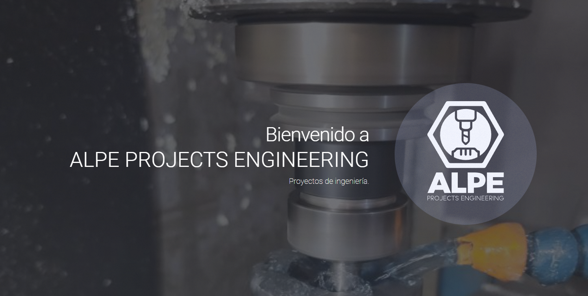
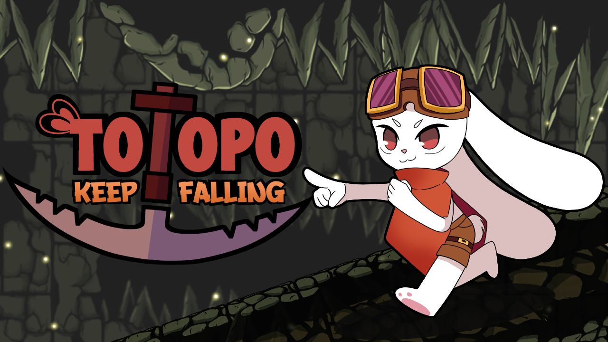
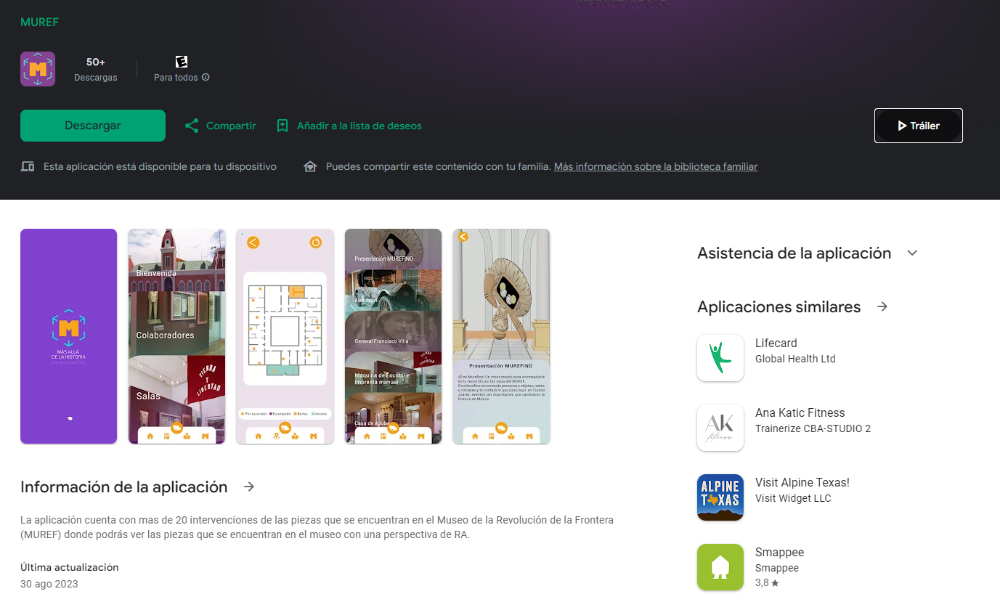
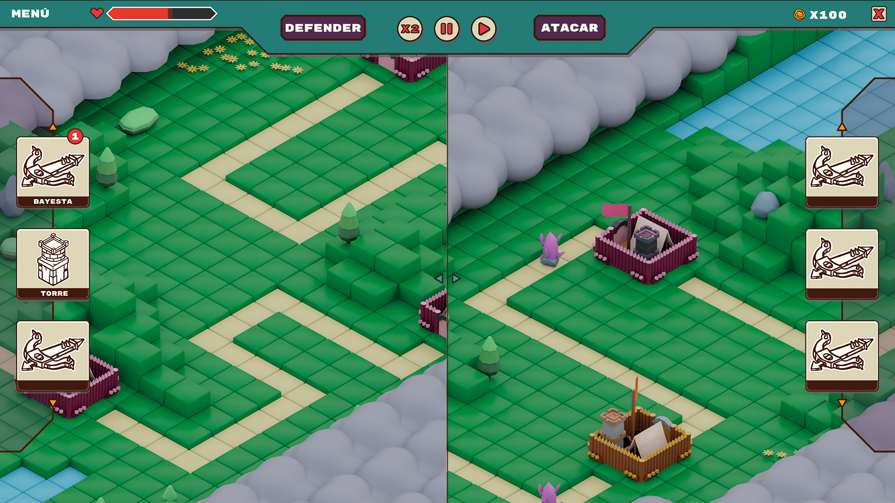

Mi experiencia en el desarrollo digital y la programación se ha caracterizado por proyectos innovadores y colaborativos que han dejado una marca significativa en diversas áreas. En Alpe Projects, contribuí al desarrollo de una landing page para una empresa de maquinados, combinando habilidades técnicas y creativas para destacar sus servicios de manera efectiva. Además, en Totopo: Keep Falling, participé como programador en la implementación de funcionalidades clave para mejorar la jugabilidad y la experiencia del usuario en un emocionante videojuego móvil. También formé parte de un proyecto de realidad aumentada para el Museo Revolucionario de la Frontera (MUREF), donde me enfoqué en el desarrollo y la implementación de características innovadoras para enriquecer la experiencia de los visitantes. A lo largo de estos proyectos, he demostrado mi capacidad para adaptarme a diversos entornos de trabajo y mi pasión por crear experiencias digitales impactantes y memorables.

Desarrollé una landing page para una empresa de maquinados, combinando tecnología y diseño para destacar sus servicios. El proyecto reflejó mi habilidad para personalizar soluciones digitales y trabajar en colaboración con el equipo. La página, diseñada para ser accesible y atractiva, incluyó un formulario de contacto para generar clientes potenciales y promover la interacción con la empresa.

Colaboré como programador en el desarrollo de un videojuego móvil llamado 'Totopo Keep Falling'. Mi rol implicó la implementación de funcionalidades clave para mejorar la jugabilidad y la experiencia del usuario. Trabajé en estrecha colaboración con el equipo para asegurar un rendimiento óptimo y una experiencia de juego emocionante. Mi contribución ayudó a hacer del juego una experiencia envolvente y entretenida para los jugadores.

Participé como programador en un proyecto de realidad aumentada para el Museo Revolucionario de la Frontera (MUREF). Los usuarios pueden explorar exhibiciones escaneando objetivos con una aplicación disponible en la Play Store. Mi contribución al proyecto implicó el desarrollo y la implementación de características clave para mejorar la experiencia del usuario dentro del museo.

Actualmente estoy involucrado en un proyecto emocionante para Variant Studios. Este proyecto implica la creación de una demo jugable que será presentada a inversores en el futuro. Debido a consideraciones de confidencialidad, por el momento solo podemos compartir imágenes conceptuales. Estoy comprometido con el desarrollo de esta demostración, asegurando que cumpla con los estándares más altos de calidad y creatividad para impresionar a los potenciales inversores.